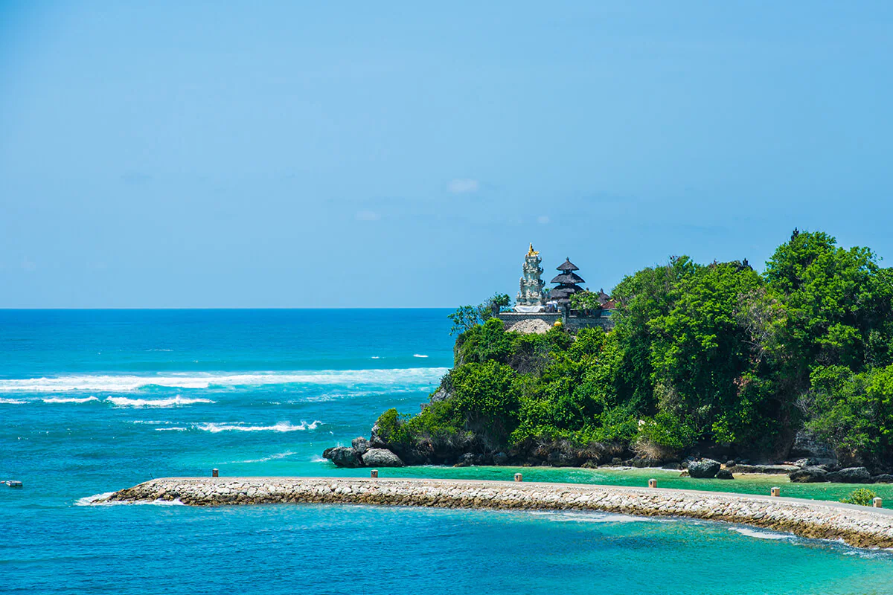
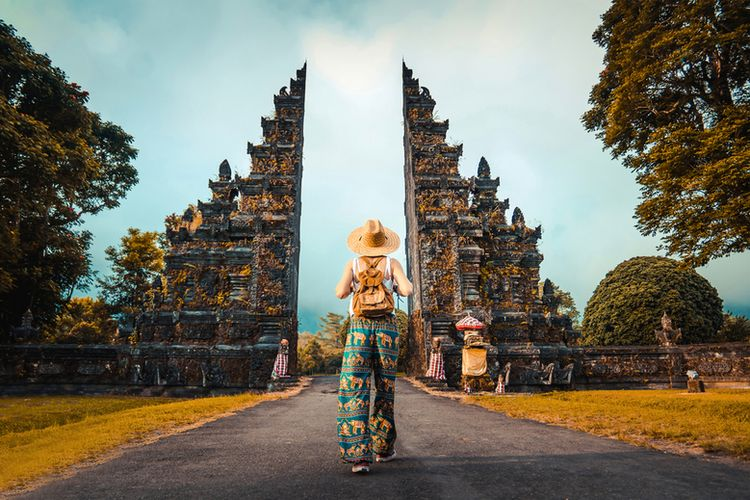
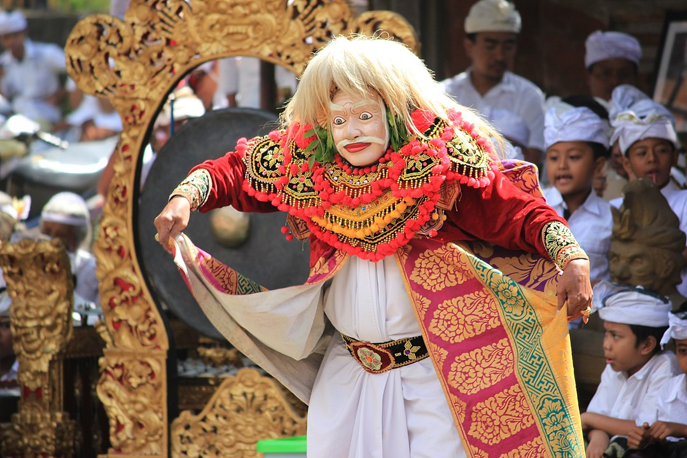
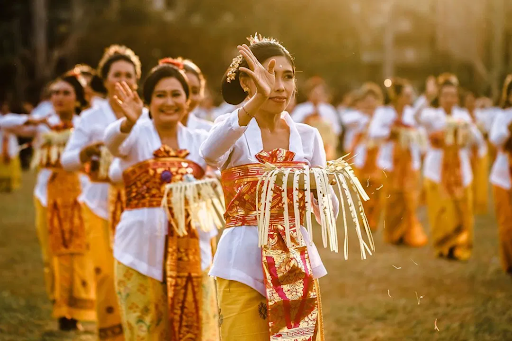

Provinsi Bali

Pantai Kuta
Bali merupakan provinsi di Indonesia yang ibukotanya berada di Denpasar. Pulau Dewata ini berdiri pada 14 Agustus 1959.
Penduduknya mayoritas memeluk agama Hindu. Bali dijadikan sebagai primadona pariwisata oleh turis mancanegara karena keunikan berbagai hasil seni dan budayanya. Kota yang terkenal dengan keindahan wisatanya masuk dalam pulau terbaik di dunia. Pulau Seribu Pura, selama 12 tahun berturut-turut dinobatkan sebagai pulau terbaik. Bali juga terdapat dua hotel yang termasuk dalam jajaran hotel mewah di dunia. Bali adalah Coral Triangle, daerah yang memiliki keanekaragaman hayati tertinggi.
Pariwisata

Bali
Bali adalah primadona pariwisata Indonesia yang sudah terkenal di seluruh dunia. Selain terkenal dengan keindahan alam, terutama pantainya, Bali juga terkenal dengan kesenian dan budayanya yang unik dan menarik. Industri pariwisata berpusat di Bali Selatan dan di beberapa daerah lainnya. Lokasi wisata yang utama adalah Kuta dan sekitarnya seperti Legian dan Seminyak, daerah timur kota seperti Sanur, pusat kota seperti Ubud, dan di daerah selatan seperti Jimbaran, Nusa Dua dan Pecatu
Bali sebagai tempat tujuan wisata yang lengkap dan terpadu memiliki banyak sekali tempat wisata menarik, antara lain: Pantai Kuta, Pura Tanah Lot, Pantai Padang - Padang, Danau Beratan Bedugul, Garuda Wisnu Kencana (GWK), Pantai Lovina dengan Lumba Lumbanya, Pura Besakih, Uluwatu, Ubud, Munduk, Kintamani, Amed, Tulamben, Pulau Menjangan dan masih banyak yang lainnya. Kini, Bali juga memiliki beberapa pusat wisata yang sarat edukasi untuk anak-anak seperti kebun binatang, museum tiga dimensi, taman bermain air, dan tempat penangkaran kura-kura.
Budaya
Rumah Adat
 Rumah Adat
Rumah Adat
Rumah Bali yang sesuai dengan aturan Asta Kosala Kosali (bagian Weda yang mengatur tata letak ruangan dan bangunan) Menurut filosofi masyarakat Bali, kedinamisan dalam hidup akan tercapai apabila terwujudnya hubungan yang harmonis antara aspek pawongan, palemahan dan parahyangan. Untuk itu pembangunan sebuah rumah harus meliputi aspek-aspek tersebut atau yang biasa disebut Tri Hita Karana. Pawongan merupakan para penghuni rumah. Palemahan berarti harus ada hubungan yang baik antara penghuni rumah dan lingkungannya.
Tari

Tari
Salah satu tarian yang sangat populer bagi para wisatawan ialah Tari Kecak dan Tari Pendet. Sekitar tahun 1930-an, Wayan Limbak bekerja sama dengan pelukis Jerman Walter Spies menciptakan tari Kecak berdasarkan tradisi Sang Hyang dan bagian-bagian kisah Ramayana. Wayan Limbak memopulerkan tari ini saat berkeliling dunia bersama rombongan penari Bali-nya.
Pakaian Daerah

Pakaian Daerah
Pakaian daerah Bali sesungguhnya sangat bervariasi, meskipun secara selintas kelihatannya sama. Masing-masing daerah di Bali mempunyai ciri khas simbolik dan ornamen, berdasarkan kegiatan/upacara, jenis kelamin dan umur penggunanya. Status sosial dan ekonomi seseorang dapat diketahui berdasarkan corak busana dan ornamen perhiasan yang dipakainya.